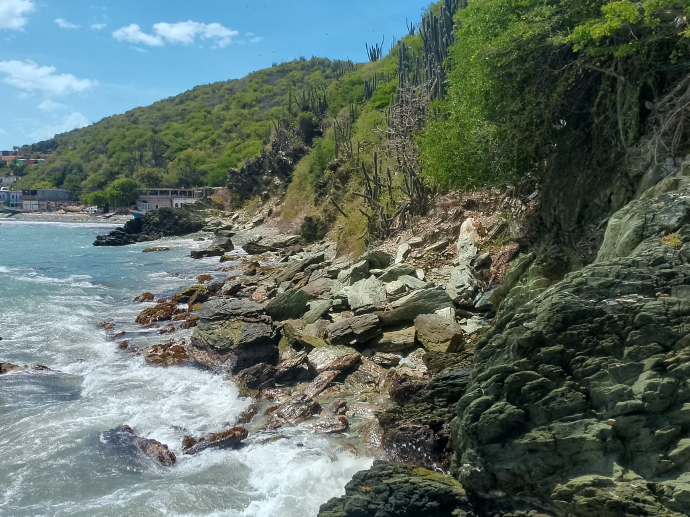
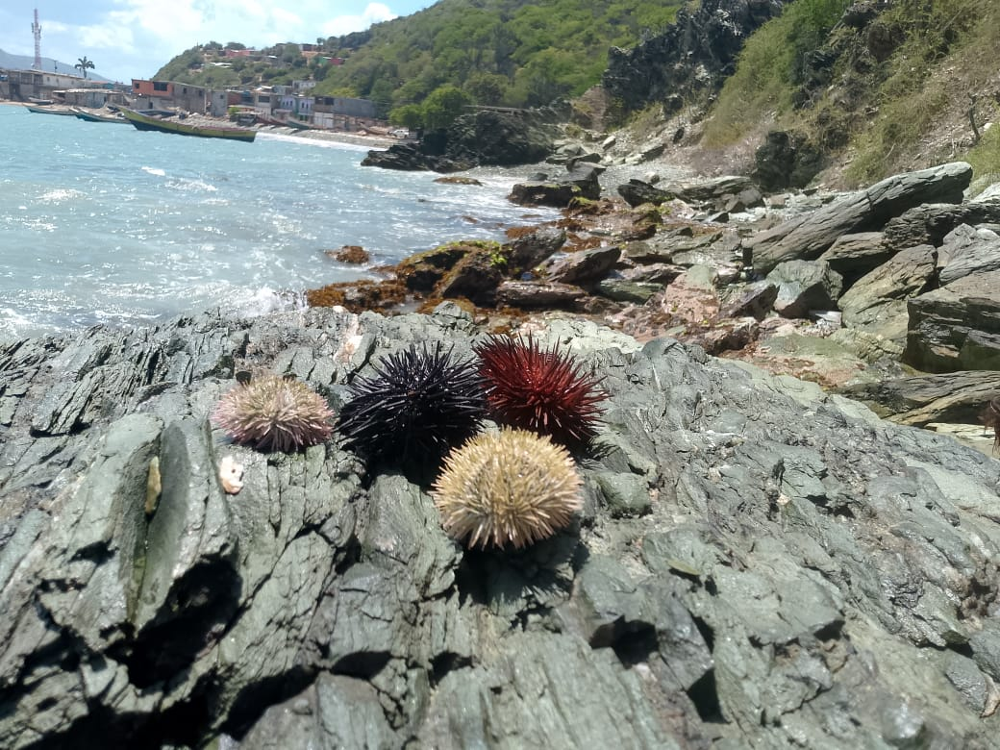
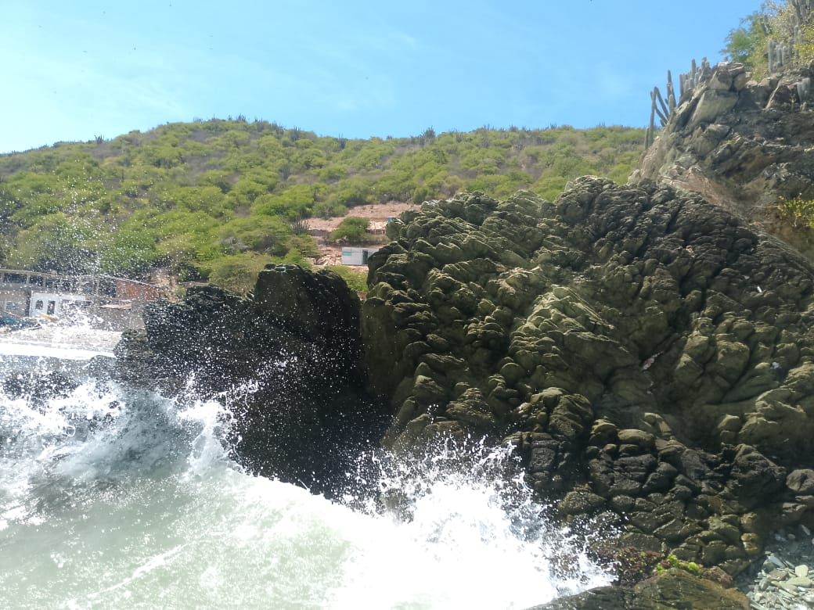
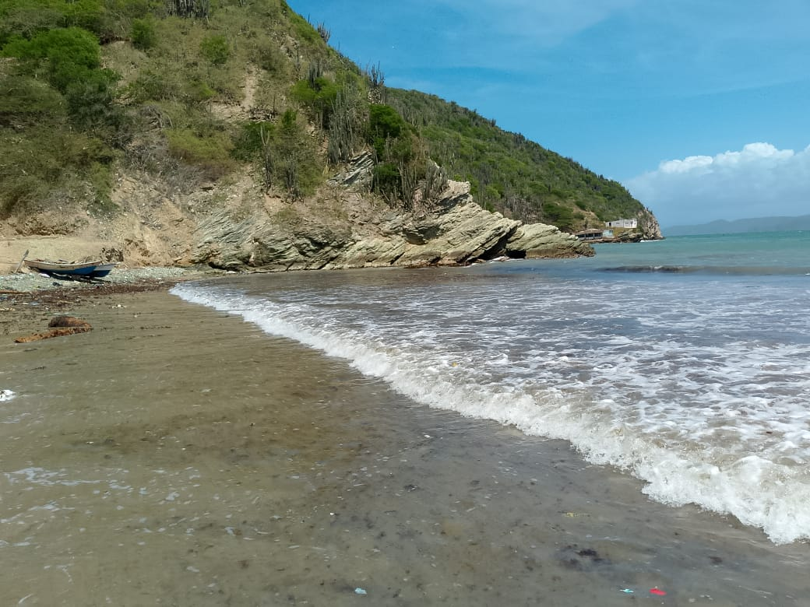
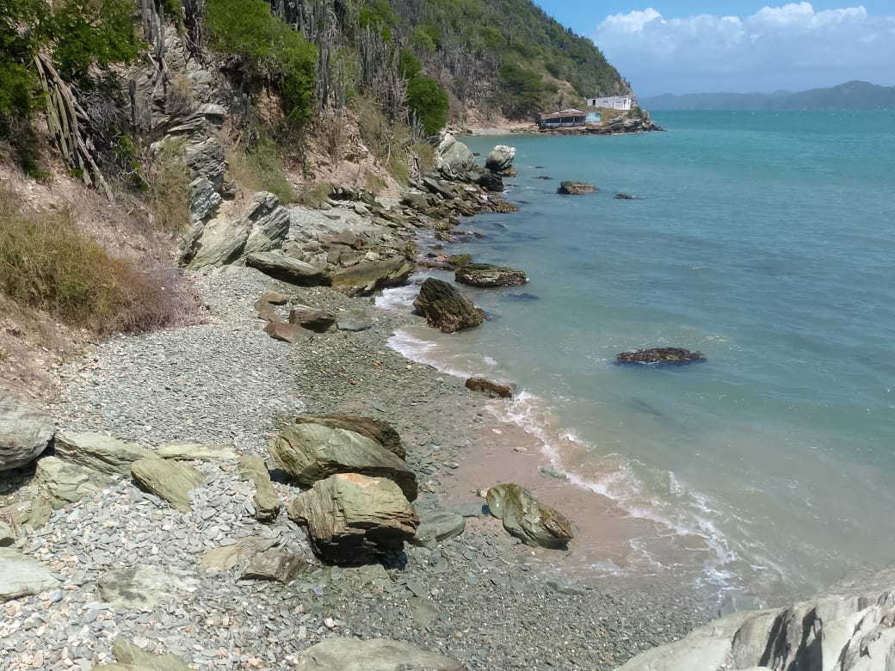
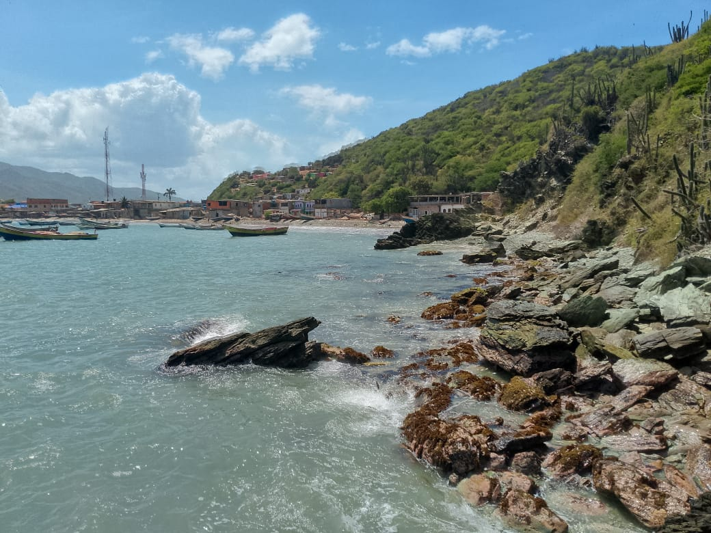

La Playita de las Piedras no es el típico lugar para echarse bajo una sombrilla; aquí se viene es a demostrar de qué estás hecho. Es el punto de encuentro favorito de los chamos y visitantes que buscan algo de acción. La verdadera emoción comienza cuando te toca surcar las rocas para llegar al peñasco de los clavados. El reto es subir a los tres niveles de altura: el tercer piso es solo para los que no conocen el miedo, aunque no te extrañe ver a niños de 10 u 11 años lanzándose con una confianza que te deja loco. Es pura adrenalina criolla en un entorno que te exige moverte.




Si no estás saltando desde lo más alto, seguro estás explorando el puente de piedra que se forma sobre el agua, una especie de cuevita por la que puedes pasar nadando para sentir la fuerza del mar de cerca. La zona está viva; los arrecifes que rodean las piedras están llenos de vida, desde crustáceos hasta esos erizos de colores que a todo el mundo le gusta ver pegados en las lajas. Y claro, no puedes decir que viniste si no pasaste por la famosa "Casa de las Piedras", el punto de referencia que todo el mundo en el Morro conoce y que le da esa identidad única a este sector.

Cómo Llegar
Llega a Playa Arriba y prepárate para surcar las piedras a pie. Si no quieres escalar, la otra opción es por agua en un cayuco o bote pequeño que te deje directo en la zona de los clavados.
Mejores Días
Los fines de semana son los mejores si quieres ver el espectáculo de los niños y jóvenes saltando; hay mucha más energía. Si prefieres explorar la cuevita con calma, ve un día de semana con el mar tranquilo.
¿Por Qué Visitarla?
Por el reto de los tres niveles de clavados y para atravesar nadando su puente de piedra. Es el sitio ideal para ver erizos y vida marina de cerca en un ambiente que no es para nada convencional.
La Playa de Las Piedras
Geográficamente, esta playa se distingue por su terreno irregular y su formación de esquistos que caen directamente al mar, creando plataformas naturales de salto. A diferencia de las playas de arena abierta, aquí el ecosistema está dominado por arrecifes someros y cavidades rocosas que sirven de refugio a una gran variedad de especies marinas. La estructura más llamativa es el arco de piedra que funciona como un túnel natural. Es un área de uso recreativo intenso pero informal, donde la seguridad depende de la destreza del visitante y el conocimiento de las mareas sobre el fondo rocoso.
